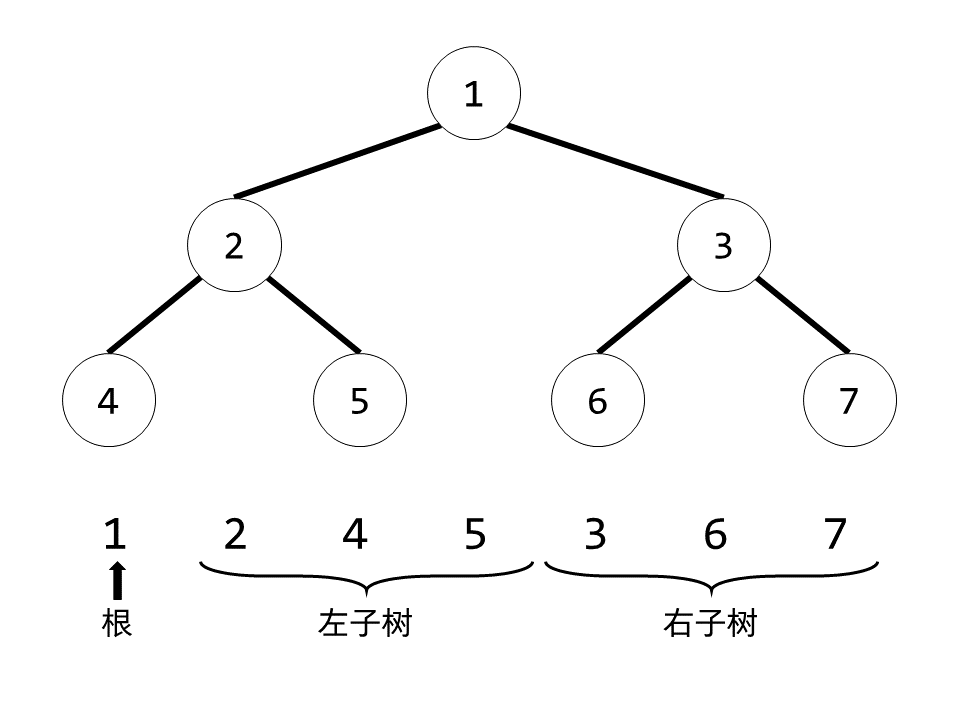
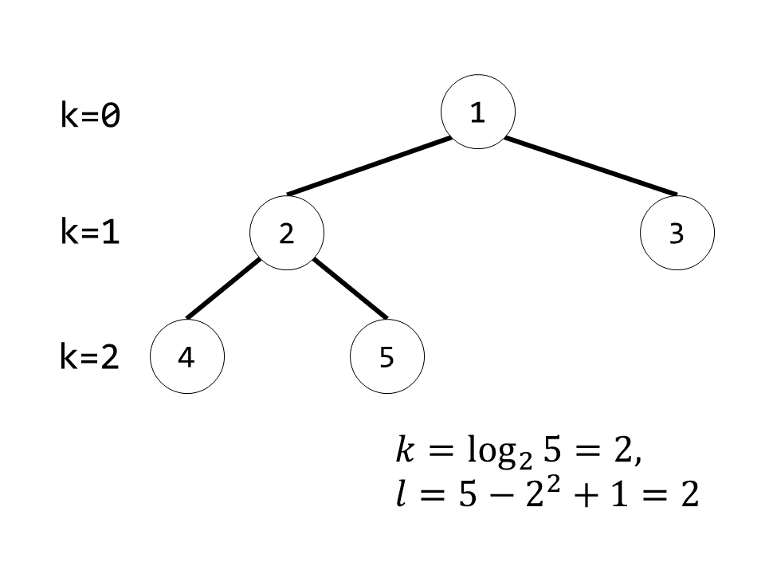
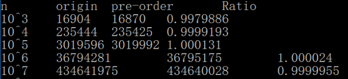

搜索解答
目前已完成到 2.5
2.4.42
上次更新：2019-02-13
发现了题解错误/代码缺陷/排版问题？请点这里：如何：提交反馈 。
题目
2.4.42
堆的前序表示。
用前序法而非级别表示一棵堆有序的树，并基于此实现堆排序。
对于 N=10^3、10^6 和 10^9 大小的随机不重复数组，
记录你的程序所使用的比较次数和标准实现所使用的比较次数。
解答
前序序列与完全二叉树
二叉树前序遍历的顺序是：自身，左子树，右子树。
因此对于一个前序遍历序列，第一个元素是根结点，第二个元素是左子结点。
再把左子结点找到，就可以把数组分成三部分：根结点，左子树，右子树，进而递归的构造出整个二叉树。
现在问题是，右子结点在哪，或者说，左子树有多大？
这里就要用到完全二叉树的性质了，我们先从比较简单的满二叉树入手。
就满二叉树而言，根结点的左子树和右子树是一样大的，即左右子树大小均为 $ (n-1)/2 $ 。
在这种情形下，右子结点的下标显然是 $ (n+1)/2 $ ，根结点下标为 0。

完全二叉树可以视为在满二叉树的基础上加了一层叶子结点，现在我们已知结点总数 $ n $。
于是可以求得二叉树的高度 $ k=\lfloor \log_2(n) \rfloor $ ，注意只有一个结点的树高度为 0。
那么最后一层的叶子结点数目为 $ l=n-2^{k}+1 $ 个，如下图所示：

如果把最后一层（第 $ k $ 层）去掉，剩余部分即为高度为 $ k-1 $ 的满二叉树，结点总数为 $ 2^k - 1 $ 。
按照之前的说明可以知道左右子树大小都等于 $ (2^{k}-2)/2=2^{k-1}-1 $。
现在要将第 $ k $ 层的 $ l $ 个结点分到左右子树里面去。
第 $ k $ 层最多能有 $ 2^k $ 个结点，取半就是 $ 2^k / 2 = 2^{k-1} $ 个。
于是当 $ l<=2^{k-1} $ 时，左右子树大小分别为 $ 2^{k-1}-1+l $ 和 $ 2^{k-1}-1 $ 。
当 $ l > 2^{k-1} $ 时，左右子树大小分别为 $ 2^{k} - 1 $ 和 $ 2^{k-1} -1 +l -2^{k-1}=l-1 $ 。
实际上，我们只要先取根结点，然后再取 $ 2^{k-1} -1 $ 个结点给左子树，再做判断：
如果 $ n-2^{k-1} < 2^{k}-1 $ ，那么对应第一种情况，末尾的 $ 2^{k-1}-1 $ 个结点即为右子树。
否则就是第二种情况，前面的 $ 2^k $ 个结点就是根结点和左子树，剩下的为右子树。
堆排序的实现
现在我们能够根据结点总数 $ n $ 来确定相应的完全二叉树，接下来则是如何进行堆排序。
堆排序的第一步就是建堆，建堆时最主要的就是 sink 操作了。
但前序序列中除了第一个结点（根结点）之外，其他结点的左右子结点下标是不能直接通过计算得到的。
因此在前序实现中，sink 操作只能对根结点进行，引出了下面的递归建堆方法。
如果根结点的左右两棵子树都已经是堆了，那么只要对根结点进行 sink 操作即可使整个二叉树变成堆。
第一步先检查子树的大小，如果小于等于 1 则说明是叶结点，直接返回。
否则计算出左右子结点的位置，递归地建堆。
最后对根结点进行 sink 操作。
那么这个 sink 操作是怎么做的呢？
计算得到了左右子结点的下标后，比较得出较大的那个，如果大于根结点则交换，否则返回。
交换后根结点变成了某一侧子树的根结点，递归地进行 sink 即可。
接下来是排序，最主要的操作是 DelMax。
前序序列的根结点好找，但是最后一个结点就比较麻烦了，它既可能在左子树也可能在右子树。
但我们可以根据之前的大小关系来寻找，
如果左子树小于等于 $ 2^k - 1 $ ，那么最后一个结点一定在左子树，否则就在右子树。
递归进行上述过程，直到到达叶子结点，该叶子结点就是最后一个结点。
之后我们将最后一个结点暂存，整个数组从后向前补缺（这一步将导致算法变成 $ O(n^2) $ ），
再把第一个结点放到最后的空位上，最后把存起来的结点放到第一位，对该结点进行 sink 操作。
依次往复即可完成排序。
测试结果：
这个算法在设计上与一般实现的比较次数大体相等，
只是移动数组耗时较长，这里只给到 $10^7$。

代码
using System;
namespace PriorityQueue
{
/// <summary>
/// 前序堆排序类，提供堆排序的静态方法。
/// </summary>
/// <typeparam name="T">需要排序的元素类型。</typeparam>
public static class HeapPreorderAnalysis
{
private static long compareTimes = 0;
/// <summary>
/// 利用堆排序对数组进行排序。
/// </summary>
/// <param name="pq">需要排序的数组。</param>
public static long Sort<T>(T[] pq) where T : IComparable<T>
{
compareTimes = 0;
int n = pq.Length;
BuildTree(pq, 0, pq.Length);
// 排序
while (n > 1)
{
int tail = GetTail(pq, 0, n);
T temp = pq[tail];
for (int i = tail + 1; i < n; i++)
pq[i - 1] = pq[i];
n--;
Exch(pq, 0, n);
pq[0] = temp;
Sink(pq, 0, n);
}
return compareTimes;
}
private static int GetTail<T>(T[] pq, int p, int n)
{
if (n <= 1)
return p;
int k = (int)(Math.Log10(n) / Math.Log10(2)); // 高度
int left = (int)Math.Pow(2, k - 1) - 1;
int right = left;
if (n - left <= (int)Math.Pow(2, k))
{
// 叶子结点全在左侧
left = n - right - 1;
return GetTail(pq, p + 1, left);
}
else
{
left = (int)Math.Pow(2, k) - 1;
right = n - left - 1;
return GetTail(pq, p + 1 + left, right);
}
}
/// <summary>
/// 递归建堆。
/// </summary>
/// <typeparam name="T">堆中元素。</typeparam>
/// <param name="pq">堆所在的数组。</param>
/// <param name="p">堆的起始下标。</param>
/// <param name="n">堆的元素数目。</param>
private static void BuildTree<T>(T[] pq, int p, int n) where T : IComparable<T>
{
if (n <= 1)
return;
int k = (int)(Math.Log10(n) / Math.Log10(2)); // 高度
int left = (int)Math.Pow(2, k - 1) - 1;
int right = left;
if (n - left <= (int)Math.Pow(2, k))
{
// 叶子结点全在左侧
left = n - right - 1;
}
else
{
left = (int)Math.Pow(2, k) - 1;
right = n - left - 1;
}
BuildTree(pq, p + 1, left);
BuildTree(pq, p + 1 + left, right);
Sink(pq, p, n);
}
/// <summary>
/// 令堆中的元素下沉。
/// </summary>
/// <param name="pq">需要执行操作的堆。</param>
/// <param name="p">需要执行下沉的结点下标。</param>
/// <param name="n">堆中元素的数目。</param>
private static void Sink<T>(T[] pq, int p, int n) where T : IComparable<T>
{
if (n <= 1)
return;
int k = (int)(Math.Log10(n) / Math.Log10(2)); // 高度
int left = (int)Math.Pow(2, k - 1) - 1;
int right = left;
if (n - left <= (int)Math.Pow(2, k))
{
// 叶子结点全在左侧
left = n - right - 1;
}
else
{
left = (int)Math.Pow(2, k) - 1;
right = n - left - 1;
}
// 找出较大的子结点
int j = p + 1, size = left;
if (right != 0) // 有右结点
{
if (Less(pq, j, p + left + 1))
{
j = p + left + 1;
size = right;
}
}
// 与根结点比较
if (!Less(pq, p, j))
return;
// 交换，继续下沉
Exch(pq, p, j);
Sink(pq, j, size);
}
/// <summary>
/// 比较堆中下标为 <paramref name="a"/> 的元素是否小于下标为 <paramref name="b"/> 的元素。
/// </summary>
/// <param name="pq">元素所在的数组。</param>
/// <param name="a">需要比较是否较小的结点序号。</param>
/// <param name="b">需要比较是否较大的结点序号。</param>
/// <returns></returns>
private static bool Less<T>(T[] pq, int a, int b) where T : IComparable<T>
{
compareTimes++;
return pq[a].CompareTo(pq[b]) < 0;
}
/// <summary>
/// 交换堆中的两个元素。
/// </summary>
/// <param name="pq">要交换的元素所在堆。</param>
/// <param name="a">要交换的结点序号。</param>
/// <param name="b">要交换的结点序号。</param>
private static void Exch<T>(T[] pq, int a, int b)
{
T temp = pq[a];
pq[a] = pq[b];
pq[b] = temp;
}
}
}